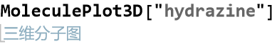
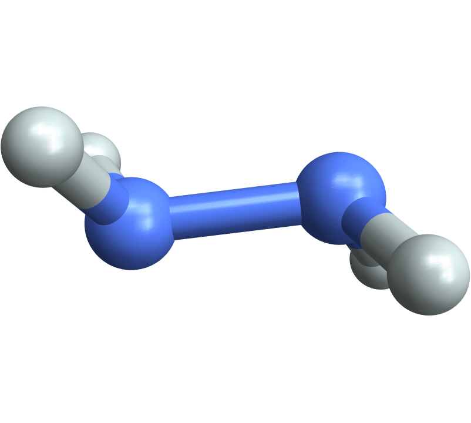
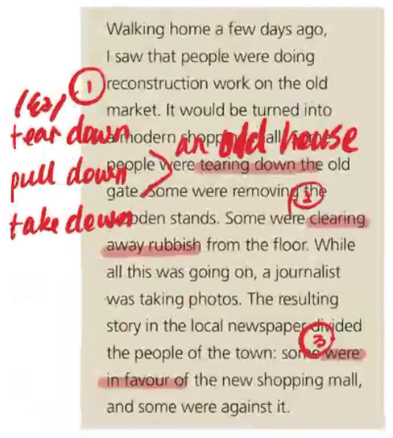
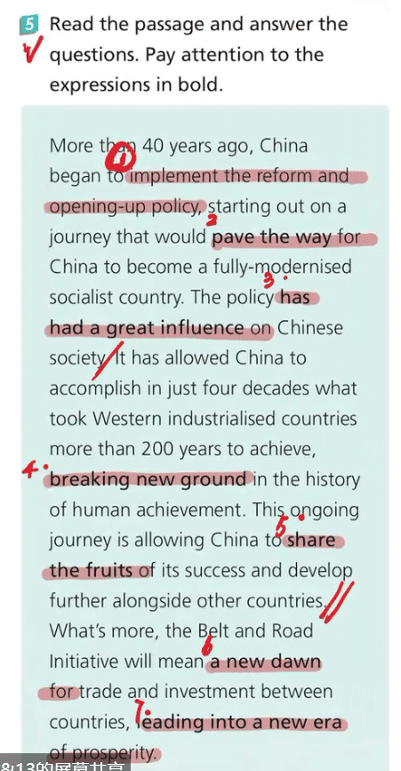

Implement/carry out the reform and opening-up policy
pave the way for sth.
(make sth. possible)
1.His economic policies paved the way for industrial expansion.
2.The discussion paved the way for formal negotiations between the two countries.
solid
1.Timely revision will form a solid basis for future study.
Timely revision will lay a solid foundation for study.
integral
essential/necessary/indispensable.
Vegetables are an integral component if our daily diet.
expand
Increase; increase in number or amount
1. Expand my vocabulary.
expand my knowledge/my scope of knowledge.
2. The bank expands its business by opening up more branches around the country.
3. unfold/spread out.
The flowers expand in the sunshine.
His face expanded in a big smile of welcome.
gesture
1.n.make a rude gesture
communicate by gesture.
2.n.an action showing one’s intentions or attitude, and usually, friendly
表示，示意
A smile is a gesture of friendliness.
3.vt. ~to sb. to do sth.
He gestured to us to be quiet.
signal
intention-intend
we came to the city with the intention of visiting the museum.
adaptation-adapt
the BBC adaptation of p & p
accessible
1.sp. is accessible.
The castle is accessible only by boat.
.sth. is accessible.
Computers are ~ to all teachers and students.
3. sb. is~
He is accessible despite his high social status.
in spite of
4.A book is accessible=>easy to be understood
He hopes that his music is accessible to everyone.
facilitate
1.Computers can be used to ~ our language learning.
2.The new airport will ~ the development of tourism.
convincing
convincing evidence.

